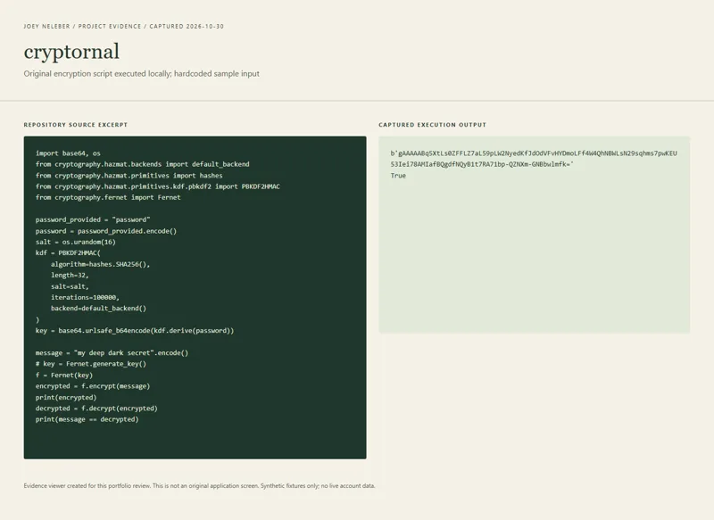

cryptornal
Explore password-derived encryption as a possible encrypted journal.

The idea
An encrypted journal was the named direction; the surviving work is an early experiment with the cryptographic building blocks. As a learning project, it connects an everyday application idea to a concrete question: how do you derive an encryption key from a password, encrypt a message and recover it? The source answers that small round-trip question. It does not answer the much larger questions involved in a usable private journal, such as durable storage, reopening entries, password changes, salt persistence, recovery or a user interface.
How it works
Run the standalone Python script with the cryptography dependency available.
The sample derives a key from a hardcoded demonstration password and a fresh random salt.
It encrypts a hardcoded sample message, decrypts the resulting token and prints whether the recovered bytes match.
Use it as a cryptographic proof of concept; there is no journal UI or saved-entry workflow in this version.
Inside the build
Password-derived keys
PBKDF2HMAC uses SHA-256 and a random 16-byte salt to derive 32 bytes. The source configures 100,000 iterations; that is a historical implementation fact, not a current security recommendation.
Authenticated encryption interface
The derived bytes are URL-safe base64 encoded for Fernet. The encryption/decryption calls make the round trip visible without implementing a cipher by hand. The cryptography library supplies the cryptographic primitive.
A small executable boundary
The complete project source is one short main.py. The new local run executes that file unchanged against its original sample input and captures the encrypted token and the True equality result.
What I learned
Understanding the pieces behind an application idea
The code supports learning about the relationship between passwords, salts, key derivation, encodings and encrypted tokens. The visible result is a successful round trip; it is not a claim that the application has a complete security design.
Recognizing the gap from prototype to product
A fresh random salt created on every run is useful inside this one process. A persistent journal would need a designed way to retain the information needed for later decryption. No such storage format is present, which makes the stopping point clear and useful to document.